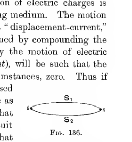

Chapter XVII#
Displacement Currents#
General Equations.#
569. Our development of the theory of electromagnetism has been based upon the experimental fact that the work done in taking a unit magnetic pole round any closed path in the field is equal to \(4\pi\) times the aggregate current enclosed by this path. But it has already been seen (§ 534) that this development of the theory is not sufficiently general to take account of phenomena in which the flow of current is not steady: the aggregate current enclosed by a path is an expression which has a definite meaning only when the flow of current is steady. Before proceeding to a more general theory, which is to cover all possible cases of current flow, it is necessary to determine in what way the experimental basis is to be generalised, in order to provide material for the construction of a more complete theory.
The answer to this question has been provided by Maxwell. According to Maxwell’s displacement theory (§ 171), the motion of electric charges is accompanied by a displacement of the surrounding medium. The motion produced by this displacement will be spoken of as a displacement-current, and we have seen that the total flow which is obtained by compounding the displacement-current with the current produced by the motion of electric charges, which will be called the conduction-current, will be such that the total flow into any closed surface is, under all circumstances, zero. Thus if \(S_1\), \(S_2\) are any two surfaces bounded by the same closed path \(s\), the total flow of current across \(S_1\) is the same as the total flow, in the same direction, across \(S_2\), so that either may be taken to be the flow through the circuit \(s\). Maxwell’s theory proceeds on the supposition that in any flow of current, the work done in taking a unit magnetic pole round a closed path is equal to the total flow of current, including the displacement-current, through any surface bounded by this path.

Two surfaces, labelled \(S_1\) and \(S_2\), are drawn as flattened closed sheets sharing the same bounding curve \(s\). The sketch illustrates that different spanning surfaces with the same edge intercept the same total current flow.
The justification for this supposition is obtained as soon as it is seen how it brings about a complete agreement between electromagnetic theory and innumerable facts of observation.
570. Let us first put the hypothesis of the existence of displacement-currents into mathematical language. Let \(u\), \(v\), \(w\) be the components of the current at any point which is produced by the motion of electric charges, and let this be measured in electromagnetic units (cf. § 484). Let \(f\), \(g\), \(h\) be the components of displacement, or polarisation, at this point, this being supposed measured in electrostatic units. Let any closed surface be taken, and let \(l\), \(m\), \(n\) be the direction-cosines of the outward normal to any element \(dS\) of the surface. Then if \(E\) is the total charge of electricity enclosed by this surface, we have, by Gauss’ Theorem,
Let us suppose that there are \(C\) electrostatic units of charge in one electromagnetic unit. Then the total charge of electricity enclosed by the surface, measured in electromagnetic units, is \(E/C\), and the rate at which this quantity increases is measured by the total inward flow of electricity across the surface \(S\), these currents of electricity being measured also in electromagnetic units. Thus we have
Substituting for \(dE/dt\) its value, as found by differentiation of equation (522), we obtain
Now \(u\), \(v\), \(w\) are the components of the conduction-current, while \(\dfrac{1}{C}\dfrac{df}{dt}\), \(\dfrac{1}{C}\dfrac{dg}{dt}\), \(\dfrac{1}{C}\dfrac{dh}{dt}\) are the components of the displacement-current, both currents being measured in electromagnetic units. Thus
are the components of Maxwell’s total current, and equation (524) expresses that the total current is a solenoidal vector, cf. § 177, the fundamental fact upon which Maxwell’s theory is based.
571. The hypothesis upon which the theory proceeds is, as we have already said, that the work done in taking a magnetic pole round any closed circuit is equal to \(4\pi\) times the total flow of current through the circuit, this current being measured in electromagnetic units. As in § 533, this is expressed by the equation
in which the line-integral is taken round the closed path, and the surface-integral is taken over any area bounded by this closed path. We proceed as in § 533, and find that equation (525) is equivalent to the system of equations
These are the equations which must replace equations (473)-(475) in the most general case of current-flow.
572. In addition we have the system of equations already obtained in § 529, namely
in which all the quantities are expressed in electromagnetic units. If the electric forces \(X\), \(Y\), \(Z\) are expressed in electrostatic units, we must replace the right hand of this equation by
and the system of equations becomes
The set of six equations, (526) and (527), form the most general system of equations of the electromagnetic field. In these equations \(u\), \(v\), \(w\), \(a\), \(b\), \(c\), \(\alpha\), \(\beta\), \(\gamma\) are expressed in electromagnetic units, while \(f\), \(g\), \(h\), \(X\), \(Y\), \(Z\) are expressed in electrostatic units.
Localisation and Flow of Energy.#
572a. We have already found reasons for thinking that neither electric nor magnetic energy is confined to the regions in which electric charges and permanent magnetism are found. We are now supposing further that a current of electricity is not confined to the conductor in which it appears to be flowing, but is accompanied by disturbances through the surrounding ether. The two suppositions are consistent with one another. For instance, a motion of electric charges will in general alter the electrostatic energy of the field, requiring a transference and adjustment of energy throughout the ether; the mechanism of this flow of energy is to be looked for in the displacement-currents which accompany the motion of the charges.
The flow of energy in the ether is dealt with in Poynting’s Theorem, which follows.
Poynting’s Theorem.#
572b. The total energy \(T+W\) in any region is given by
whence, on differentiating, and replacing \(\mu a\) by \(a\), \(KX\) by \(4\pi f\), etc.,
on substitution from equations (526), (527). The first line is
by Green’s Theorem (§ 179), \(l\), \(m\), \(n\) being the direction-cosines of the normal inwards into the region.
In equation (528), the last term represents exactly the rate at which work is performed or energy dissipated by the flow of currents, so that the remainder, expression (529), represents the rate at which energy flows into the region from outside.
If \(\Pi_x\), \(\Pi_y\), \(\Pi_z\) denote \(\dfrac{C}{4\pi}(Y\gamma - Z\beta)\), etc., we see that the value of \(\dfrac{d}{dt}(T+W)\) is the same as if there were a flow of energy in the direction \(l\), \(m\), \(n\) of amount \(l\Pi_x + m\Pi_y + n\Pi_z\). The vector \(\Pi\) of which \(\Pi_x\), \(\Pi_y\), \(\Pi_z\) are components is of amount
where \(R\), \(H\) are the electric and magnetic intensities and \(\theta\) is the angle between them. The direction of the vector \(\Pi\) is at right angles to both \(R\) and \(H\), and the flow of energy into or out of the surface is the same as if there were a flow equal to \(\Pi\) in magnitude and direction at every point of space. This vector \(\Pi\) is called the Poynting flux of energy.
It is to be noticed that we have only found the total flux of energy over a closed surface; we have no right to assume that the flux at any single point is that given by Poynting’s formula.
But if we are right in supposing (cf. § 161) that the state of the medium at every point depends only on the values and directions of \(R\) and \(H\), then the flow of energy at every point must be exactly that given by the Poynting flux, for the integral (529) can be distributed in no other way consistently with the supposition in question.
Equations for an Isotropic Conductor.#
573. In an isotropic medium we may put, cf. § 128,
The values of \(u\), \(v\), \(w\) are also given in terms of \(X\), \(Y\), \(Z\) by Ohm’s Law. The electric forces, measured in electromagnetic units, the components of force acting on an electromagnetic unit of charge, will be \(CX\), \(CY\), \(CZ\), so that we have the relations
and equations (526) become
Thus the present system of equations differs from that previously obtained, in which the displacement-current was neglected, by the presence of the term \(\dfrac{K}{C}\dfrac{dX}{dt}\). To form an estimate of the relative importance of this term, let us examine the case of an alternating current in which the time factor is \(e^{ipt}\). We may as usual replace \(d/dt\) by \(ip\), and equations (531) become
Thus neglecting the displacement-current amounts to neglecting the ratio \(Kip\tau/4\pi C^2\). Clearly the neglect of this ratio produces the greatest error in problems in which \(\tau\) is large, conductors of high resistance, and in which \(p\) is large, rapidly changing fields. On substituting numerical values it will be found that in problems of conduction through metals, the neglect of the factor \(Kip\tau/4\pi C^2\) produces a quite inappreciable error unless \(p\) is comparable with \(10^{15}\), unless we are dealing with oscillating fields of which the frequency is comparable with that of light-waves. Thus the effect of the displacement-current in metals has been inappreciable in the problems so far discussed, so that the neglect of this effect may be regarded as justifiable. The matter stands differently as regards the problems to be discussed in the next chapter, in which the oscillations of the field are comparable with those of light-waves.
Equations for an Isotropic Dielectric.#
574. The equations assume special importance when the medium is isotropic and non-conducting. There can be no conduction-current, so that we put \(u=v=w=0\). We also put
The equations now become
Of these two systems of equations the former may be regarded as giving the magnetic field in terms of the changes in the electric field, while the latter gives the electric field in terms of the changes in the magnetic field. We notice that, except for a difference in sign, the two systems of equations are exactly symmetrical. Thus in an isotropic non-conducting medium magnetic and electric phenomena play exactly similar parts.
The two systems of equations may be regarded as expressing two facts for which we have confirmation, although indirect, from experiment. System (A) expresses, as we have seen, that the line-integral of magnetic force round a circuit is equal to the rate of change, measured with proper sign, of the surface-integral of polarisation, this rate of change being equal to \(4\pi\) times the total current through the circuit, while similarly system (B) expresses that the line-integral of electric force round a circuit is equal to the rate of change of the surface-integral of the magnetic induction. These two facts, however, are not independent of one another: the latter can be shown to follow from the former if we assume the whole mechanism of the system to be dynamical in its nature. This might be suspected from what has already been seen in § 556, but we shall verify it before proceeding further.
575. Assuming the whole field to form a dynamical system, the kinetic and potential energies are given by
The quantities \(a\), \(\beta\), \(\gamma\) must fundamentally be of the nature of velocities: let us denote them by \(\dot \xi\), \(\dot \eta\), \(\dot \zeta\), so that \(\xi\), \(\eta\), \(\zeta\) are positional coordinates, and
giving the kinetic energy as a quadratic function of the velocities. The motion can be obtained from the principle of least action, expressed by equation (496), namely
We cannot, however, obtain the equations of motion until we know the relation between the coordinates \(\xi\), \(\eta\), \(\zeta\) which enter in the kinetic energy, and the coordinates \(X\), \(Y\), \(Z\) which enter in the potential energy. We shall find that if we suppose this relation to be that expressed by equations (A), then equations (B) will be obtained as the equations of motion.
576. Assuming that the magnetic coordinates \(\xi\), \(\eta\), \(\zeta\) are connected with the electric coordinates \(X\), \(Y\), \(Z\) by equations (A), we have
so that on integration we obtain
except for a series of constants which may be avoided by assigning suitable values to \(\xi\), \(\eta\), \(\zeta\). Using equations (533), we have the potential energy expressed as a function of \(\xi\), \(\eta\), \(\zeta\), and the kinetic energy expressed as a function of \(\dot \xi\), \(\dot \eta\), \(\dot \zeta\), and we may now proceed to find the equations of motion by the principle of least action.
We have
so that
As in § 545, we suppose the values of \(\delta \xi\), \(\delta \eta\), \(\delta \zeta\) all to vanish at the instants \(t=0\) and \(t=\tau\), so that the first term on the right hand disappears.
We have also
on substituting the values of \(K\,\delta X\), etc., from equations (533). The volume integral may be transformed by Green’s Theorem, and we obtain
Collecting terms, we find that
Since the variations \(\delta \xi\), \(\delta \eta\), \(\delta \zeta\) are independent and may have any values at all points in the field, their coefficients must vanish separately, and we must have
These are the equations which the principle of least action gives as the equations of motion, and we see at once that they are simply the equations of system (B).
Homogeneous Medium.#
577. Let us next consider the solution of the systems of equations (A) and (B), page 513, when \(\mu\) and \(K\) are constants throughout the medium, and the medium contains no electric charges. From the first equation of system (A), we have
and on substituting the values of \(\dfrac{\mu}{C}\dfrac{d\gamma}{dt}\) and \(\dfrac{\mu}{C}\dfrac{d\beta}{dt}\) from the last two equations of system (B), this equation becomes
Since the medium is supposed to be uncharged, we have
so that the last term may be replaced by \(+\dfrac{\partial^2 X}{\partial x^2}\), and the equation becomes
By exactly similar analysis we can obtain the differential equation satisfied by \(Y\), \(Z\), \(a\), \(\beta\) and \(\gamma\), and in each case this differential equation is found to be identical with that satisfied by \(X\). Thus the three components of electric force and the three components of magnetic force all satisfy exactly the same differential equation, namely
where \(a\) stands for \(C/\sqrt{K\mu}\). This equation, for reasons which will be seen from its solution, is known as the equation of wave-propagation.
Solutions of \(d^2\chi/dt^2 = a^2 ∇^2\chi\).#
Solution for Spherical Waves.#
578. The general solution of the equation of wave-propagation is best approached by considering the special form assumed when the solution \(\chi\) is spherically symmetrical. If \(\chi\) is a function of \(r\) only, where \(r\) is the distance from any point, we have
which may be transformed into
and the solution is
where \(f\) and \(Φ\) are arbitrary functions.
The form of solution shews that the value of \(\chi\) at any instant over a sphere of any radius \(r\) depends upon its values at a time \(t\) previous over two spheres of radii \(r-at\) and \(r+at\). In other words, the influence of any value of \(\chi\) is propagated backwards and forwards with velocity \(a\). For instance, if at time \(t=0\) the value of \(\chi\) is zero except over the surface of a sphere of radius \(r\), then at time \(t\) the value of \(\chi\) is zero everywhere except over the surfaces of the two spheres of radii \(r\pm at\); we have therefore two spherical waves, converging and diverging with the same velocity \(a\).
General Solution (Liouville).#
579. The general solution of the equation can be obtained in the following manner, originally due to Liouville.
Expressed in spherical polars, \(r\), θ and φ, the equation to be solved is
Let us multiply by \(\sin θ\,dθ\,dφ\) and integrate this equation over the surface of a sphere of radius \(r\) surrounding the origin. If we put
the equation becomes
the remaining terms vanishing on integration. The solution of this equation, cf. equation (536), is
For small values of \(r\) this assumes the form
In order that \(\lambda\) may be finite at the origin through all time, we must have
at every instant, so that the function \(Φ\) must be identical with \(-f\). On putting \(r=0\), equation (539) becomes
and from equation (537), putting \(r=0\), we have
so that
Equation (538) may now be written as
On differentiating this equation with respect to \(r\) and \(t\) respectively,
and on addition we have
This equation is true for all values of \(r\) and \(t\): putting \(t=0\), we have
as an equation which is true for all values of \(r\). Giving to \(r\) the special value \(r=at\), the equation becomes
The left hand is, by equation (520), equal to \(4\pi(\chi)_{r=0}\). If we use \(\bar \chi\), \(\bar{\dot \chi}\) to denote the mean values of \(\chi\) and \(\dot \chi\) averaged over a sphere of radius \(at\) at any instant, the equation becomes
Thus the value of \(\chi\) at any point, which we select to be the origin, at any instant \(t\) depends only on the values of \(\chi\) and \(\dot \chi\) at time \(t=0\) over a sphere of radius \(at\) surrounding this point. The solution is of the same nature as that obtained in § 578, but is no longer limited to spherical waves.
General Solution (Kirchhoff).#
580. A still more general form of solution has been given by Kirchhoff. Let \(Φ\) and \(Ψ\) be any two independent solutions of the original equation, so that
By Green’s Theorem, equation (101),
by equations (542). The volume integral extends through the interior of any space bounded by the closed surfaces \(S_1\), \(S_2\), … , and the normals to \(S_1\), \(S_2\), … are drawn, as usual, into the space. If we integrate the equation just obtained throughout the interval of time from \(t=-t'\) to \(t=+t''\), we obtain
So far \(Ψ\) has denoted any solution of the differential equation. Let us now take it to be \(\dfrac{1}{r}F(r+at)\), this being a solution, cf. equation (536), whatever function is denoted by \(F\), and let \(F(x)\) be a function of \(x\) such that it and all its differential coefficients vanish for all values of \(x\) except \(x=0\), while
Such a function, for instance, is \(F(x)=\mathrm{Lt}_{c\to 0}\,\dfrac{c}{\pi(x^2+c^2)}\).
We can choose \(t'\) so that, for all values of \(r\) considered, the value of \(r-at'\) is negative. The value of \(r+at''\) is positive if \(t''\) is positive. Thus \(F(r+at)\) and all its differential coefficients vanish at the instants \(t=t''\) and \(t=-t'\), so that the right-hand member of equation (543) vanishes, and the equation becomes
Let us now suppose the surfaces over which this integral is taken to be two in number. First, a sphere of infinitesimal radius \(r_0\), surrounding the origin, which will be denoted by \(S_1\), and second, a surface, as yet unspecified, which will be denoted by \(S\). Let us first calculate the value of the contribution to equation (544) from the first surface. We have, on this first surface,
so that when \(r_0\) is made to vanish in the limit, we have
and therefore
since the integrand vanishes except when \(t=0\).
Thus equation (544) becomes
Integrating by parts, we have, as the value of the first term under the time integral,
The first term vanishes at both limits, and equation (545) now becomes
We can now integrate with respect to the time, for \(F(r+at)\) exists only at the instant \(t=-r/a\). Thus the equation becomes
giving the value of \(Φ\) at the time \(t=0\) in terms of the values of \(Φ\) and \(\dot Φ\) taken at previous instants over any surface surrounding the point. The solution reduces to that of Liouville on taking the surface \(S\) to be a sphere, so that \(\dfrac{\partial}{\partial n} = -\dfrac{\partial}{\partial r}\).
As with the former solutions, the result obtained clearly indicates propagation in all directions with uniform velocity \(a\).
Propagation of Electromagnetic Waves.#
581. It is now clear that the system of equations
etc., obtained in § 577 indicates that, in a homogeneous isotropic dielectric, all electromagnetic effects ought to be propagated with the uniform velocity \(\dfrac{C}{\sqrt{K\mu}}\). This enables us to apply a severe test to the truth of the theory of displacement-currents. The value of \(C\) can of course be determined experimentally, and the velocity of propagation of electromagnetic waves can also be determined. In air, in which \(K=\mu=1\), these two quantities ought, if the hypothesis of displacement-currents is sound, to be identical.
582. For the value of \(C\), the ratio of the two units, the following experimental results are collected by Abraham, as likely to be most accurate:
Himstead … \(3\!\cdot\!0057 \times 10^{10}\)
Rosa … \(3\!\cdot\!0000 \times 10^{10}\)
J. J. Thomson … \(2\!\cdot\!9960 \times 10^{10}\)
Abraham … \(2\!\cdot\!9913 \times 10^{10}\)
Pellat … \(3\!\cdot\!0092 \times 10^{10}\)
Hurmuzescu … \(3\!\cdot\!0010 \times 10^{10}\)
Perot and Fabry … \(2\!\cdot\!9973 \times 10^{10}\)
The mean of these quantities is
For the velocity of propagation of electromagnetic waves in air, the following experimental values are collected by Blondlot and Gutton:
Blondlot … \(3\!\cdot\!022\times 10^{10}\), \(2\!\cdot\!964\times 10^{10}\), \(2\!\cdot\!980\times 10^{10}\)
Trowbridge and Duane … \(3\!\cdot\!003\times 10^{10}\)
MacLean … \(2\!\cdot\!9911\times 10^{10}\)
Saunders … \(2\!\cdot\!982\times 10^{10}\), \(2\!\cdot\!997\times 10^{10}\)
The mean of these quantities is \(2\!\cdot\!991 \times 10^{10}\). Thus the two quantities agree to within a difference which is easily within the limits of experimental error.
Electromagnetic Theory of Light.#
583. Both these quantities are equal, or very nearly equal, to the velocity of light, and this led Maxwell to suggest that the phenomena of light propagation were, in effect, identical with the propagation of electric waves. Out of this suggestion, amply borne out by the results of further experiments, has grown the Electromagnetic Theory of Light, of which a short account will be given in the next chapter. From an examination of different experimental results, Cornu gives as the most probable value of the velocity of light in free ether
Dividing by \(1\!\cdot\!000294\), the refractive index of light passing from a vacuum to air, we find as the velocity of light in air,
This quantity, again, is identical, except for a difference which is well within the limits of experimental error, with the quantities already obtained. Thus we may say that the ratio of units \(C\) is identical with the velocity of propagation of electromagnetic waves, and this again is identical with the velocity of light.
Units.#
584. We can at this stage sum up all that has been said about the different systems of electrical units.
There are three different systems of units to be considered, of which two are theoretical systems, the electrostatic and the electromagnetic, while the third is the practical system. We shall begin by discussing the two theoretical systems and their relation to one another.
585. In the Electrostatic System the fundamental unit is the unit of electric charge, this being defined as a charge such that two such charges at unit distance apart in air exert unit force upon one another. There will, of course, be different systems of electrostatic units corresponding to different units of length, mass and time, but the only system which need be considered is that in which these units are taken to be the centimetre, gramme and second respectively.
In the Electromagnetic System the fundamental unit is the unit magnetic pole, this being defined to be such that two such poles at unit distance apart in air exert unit force upon one another. Again the only system which need be considered is that in which the units of length, mass and time are the centimetre, gramme and second respectively.
From the unit of electric charge can be derived other units, for instance of electric force, electric potential, electric current, etc., in which to measure quantities which occur in electric phenomena. These units will of course also be electrostatic units, being derived from the fundamental electrostatic unit.
So also from the unit magnetic pole can be derived other units, for instance of magnetic force, magnetic potential, strength of a magnetic shell, etc., in which to measure quantities which occur in magnetic phenomena. These units will belong to the electromagnetic system.
If electric phenomena were entirely dissociated from magnetic phenomena, the two entirely different sets of units would be necessary, and there could be no connexion between them. But the discovery of the connexion between electric currents and magnetic forces enables us at once to form a connexion between the two sets of units. It enables us to measure electric quantities in the strength of a current in electromagnetic units, and conversely we can measure magnetic quantities in electrostatic units.
We find, for instance, that a magnetic shell of unit strength in electromagnetic measure produces the same field as a current of unit strength. We accordingly take the strength of this current to be unity in electromagnetic measure, and obtain an electromagnetic unit of electric current. We find, as a matter of experiment, that this unit is not the same as the electrostatic unit of current, and therefore denote its measure in electrostatic units by \(C\). This is the same as taking the electromagnetic unit of charge to be \(C\) times the electrostatic unit, for current is measured in either system of units as a charge of electricity per unit time.
In the same way we can proceed to connect the other units in the two systems. For instance, the electromagnetic unit of electric intensity will be the intensity in a field in which an electromagnetic unit of charge experiences a force of one dyne. An electrostatic unit of charge in the same field would of course experience a force of \(1/C\) dyne, so that the electrostatic measure of the intensity in this field would be \(1/C\). Thus the electromagnetic unit of intensity is \(1/C\) times the electrostatic. The following table of the ratios of the units can be constructed in this way:
Ratios of Units.#
Quantity |
One electromagnetic unit equals electrostatic units |
|---|---|
Charge of Electricity |
\(C\) |
Electromotive Force |
\(1/C\) |
Electric Intensity |
\(1/C\) |
Potential |
\(1/C\) |
Electric Polarisation |
\(C\) |
Capacity |
\(C^2\) |
Current |
\(C\) |
Resistance of a conductor |
\(1/C^2\) |
Strength of magnetic pole |
\(1/C\) |
Magnetic Intensity |
\(C\) |
Induction |
\(1/C\) |
Inductive Capacity |
\(C^2\) |
Magnetic Permeability |
\(1/C^2\) |
586. The value of \(C\), as we have said, is equal to about \(3\times10^{10}\) in C.G.S. units. If units other than the centimetre, gramme and second are taken, the value of \(C\) will be different. Since we have seen that \(C\) represents a velocity, it is easy to obtain its value in any system of units.
For instance a velocity \(3\times10^{10}\) in C.G.S. units is \(6\!\cdot\!71\times10^8\) miles per hour, so that if miles and hours are taken as units the value of \(C\) will be \(6\!\cdot\!71\times10^8\).
587. The practical system of units is derived from the electromagnetic system, each practical unit differing only from the corresponding electromagnetic unit by a certain power of ten, the power being selected so as to make the unit of convenient size. The actual measures of the practical units are as follows:
Practical Units.#
Quantity |
Name of Unit |
Measure in electromagnetic units |
Measure in electrostatic units (taking \(C=3\times10^{10}\)) |
|---|---|---|---|
Charge of Electricity |
Coulomb |
\(10^{-1}\) |
\(3\times10^9\) |
Electromotive Force |
Volt |
\(10^8\) |
\(1/300\) |
Electric Intensity |
Volt |
\(10^8\) |
\(1/300\) |
Potential |
Volt |
\(10^8\) |
\(1/300\) |
Capacity |
Farad |
\(10^{-9}\) |
\(9\times10^{11}\) |
Capacity |
Microfarad |
\(10^{-15}\) |
\(9\times10^5\) |
Current |
Ampère |
\(10^{-1}\) |
\(3\times10^9\) |
Resistance |
Ohm |
\(10^9\) |
\(1/(9\times10^{11})\) |
For legal and commercial purposes, the units are defined in terms of material standards. Thus according to the resolutions of the International Conference of 1908 the legal, International, ohm is defined to be the resistance offered to a steady current by a uniform column of mercury of length \(106\!\cdot\!300\) cms., the temperature being \(0^\circ\) C., and the mass being \(14\!\cdot\!4521\) grammes, this resistance being equal, as nearly as can be determined by experiment, to \(10^9\) electromagnetic units. Similarly the legal, International, ampère is defined to be the current which, when passed through a solution of silver nitrate in water, deposits silver at the rate of \(\!\cdot\!00111800\) grammes per second.
588. As explained in § 18, all the electric and magnetic units will have apparent dimensions in mass, length and time. These are shown in the following table:
Quantity |
Symbol |
Electrostatic dimensions |
Electromagnetic dimensions |
|---|---|---|---|
Charge of Electricity |
\(e\) |
\(M^{1/2}L^{3/2}T^{-1}\) |
\(M^{1/2}L^{1/2}\) |
Density |
\(\rho\) |
\(M^{1/2}L^{-3/2}T^{-1}\) |
\(M^{1/2}L^{-5/2}\) |
Electromotive Force |
\(E\) |
\(M^{1/2}L^{1/2}T^{-1}\) |
\(M^{1/2}L^{1/2}T^{-2}\) |
Electric Intensity |
\(R(X,Y,Z)\) |
\(M^{1/2}L^{-1/2}T^{-1}\) |
\(M^{1/2}L^{-1/2}T^{-2}\) |
Potential |
\(V\) |
\(M^{1/2}L^{1/2}T^{-1}\) |
\(M^{1/2}L^{1/2}T^{-2}\) |
Electric Polarisation |
\(P(f,g,h)\) |
\(M^{1/2}L^{-1/2}T^{-1}\) |
\(M^{1/2}L^{-3/2}\) |
Capacity |
\(C\) |
\(L\) |
\(L^{-1}T^2\) |
Current |
\(i\) |
\(M^{1/2}L^{3/2}T^{-2}\) |
\(M^{1/2}L^{1/2}T^{-1}\) |
Current per unit area |
\((u,v,w)\) |
\(M^{1/2}L^{-1/2}T^{-2}\) |
\(M^{1/2}L^{-3/2}T^{-1}\) |
Resistance |
\(R\) |
\(L^{-1}T\) |
\(LT^{-1}\) |
Specific resistance |
\(\tau\) |
\(T\) |
\(L^2T^{-1}\) |
Strength of magnetic pole |
\(m\) |
\(M^{1/2}L^{1/2}\) |
\(M^{1/2}L^{3/2}T^{-1}\) |
Magnetic Force |
\(H(a,\beta,\gamma)\) |
\(M^{1/2}L^{1/2}T^{-2}\) |
\(M^{1/2}L^{-1/2}T^{-1}\) |
Induction |
\(B(a,b,c)\) |
\(M^{1/2}L^{-1/2}\) |
\(M^{1/2}L^{-1/2}T^{-1}\) |
Inductive Capacity |
\(K\) |
\(1\) |
\(L^{-2}T^2\) |
Magnetic Permeability |
\(\mu\) |
\(L^{-2}T^2\) |
\(1\) |
References.#
On displacement-currents:
Maxwell. Electricity and Magnetism. Part IV, Chap. ix.
J. J. Thomson. Elem. Theory of Electricity and Magnetism. Chap. xiii.
Webster. Electricity and Magnetism. Chap. xiii.
On Units:
Whetham. Experimental Electricity. Chap. viii.
J. J. Thomson. Elem. Theory of Electricity and Magnetism. Chap. xii.